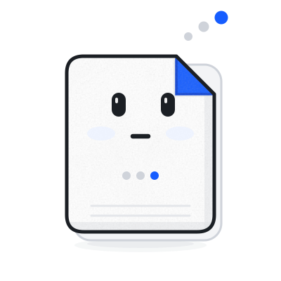

DEFAULT
默认
登录、首页、设置，以及没有特定状态的普通页面。
继续你的错题闭环。
吉祥物
以去手脚的主体版为唯一身体基准：纸面、折角、三点、横线和腮红都不动，只改眼睛、嘴型和 2–4 个强调标记。表情服务产品状态，不做表情包。
登录、首页、设置，以及没有特定状态的普通页面。
继续你的错题闭环。

错题列表空、统计无数据、没有草稿、首次进入。
还没有错题，先录入一道。

分析中、生成中、校验中，以及任务中心的运行中。
正在分析知识点…

生成完成、练习正确、掌握度提升、连续复习达成。
三张同类题已经准备好。

分析失败、生成失败、网络错误、图片识别失败。
这次没跑通，重试一下。
可选动效：思考态的第三颗蓝点按 1.8s 呼吸；完成态三颗星错峰 80ms 淡入。不要给整只角色加弹跳；所有动效尊重 prefers-reduced-motion。
| 产品状态 | 图形 | 使用位置 | 文案要点 |
|---|---|---|---|
| idle / 默认 | mascot-body.svg | 登录、首页、设置、介绍页 | 保持安静，不抢题干和主操作 |
| empty / 空 | states/state-curious.svg | 空错题本、空统计、无草稿 | 告诉用户下一步能做什么 |
| analyzing / generating / validating | states/state-thinking.svg | 详情页 AI 面板、任务中心运行中 | 说明当前阶段和大概等待时间 |
| success / 完成 | states/state-happy.svg | 生成完成、练习正确、掌握度提升 | 确认结果，并给出下一步 |
| error / 失败 | states/state-error.svg | 分析/生成/识图/网络失败 | 说明原因，保留输入，提供重试 |
| 部件 | 基准 | 允许的变化 |
|---|---|---|
| 眼睛 | 20 宽；默认/好奇 36 高，思考 34，完成/失败 28 | 思考上移 6、右移 4；完成/失败下移 3；倾斜 ±10° |
| 眼高光 | 4 × 8，跟随眼睛倾斜 | 所有状态固定，不单独移动 |
| 腮红 | (144,190) / (256,190)，20 × 10 | 所有状态固定，不移动、不改色 |
| 腹部三点 | r6，中心 (180 / 200 / 220, 250) | 所有状态固定，第三颗蓝点不换位置 |
| 嘴 | 中心 (200,204)，6.5px 描边 | 默认 44 宽；开心 52 宽；好奇小圆；思考平线；失败倒弧 |
| 强调标记 | 头顶或两侧 | 问号、三点、三颗四角星、一滴汗；每个状态最多 3 个 |
mascot-mark.svg；状态靠文案和语义色，不靠小图表情。
240px
96px
状态文件只新增表情与强调标记；身体路径、折角、三点和横线与 mascot-body.svg 保持一致。默认主体可下到 96px；状态表情建议 ≥ 120px。所有 SVG 透明背景，不含外链字体和位图。3D 三渲二交互版见 mascot-3d/index.html。